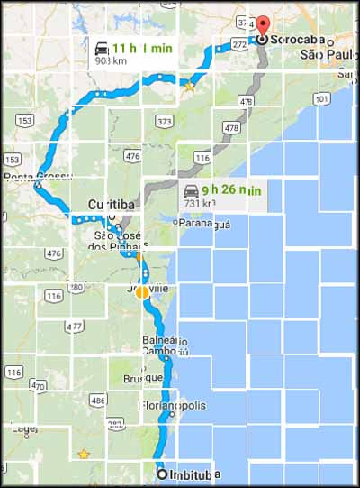

Iniciei em Imbituba mais um dia para pegar a estrada de volta ao Rio. Até que o quarto de hospedaria no posto de gasolina Vila Nova me acolheu bem, tive uma boa noite de sono. Desci até a loja de conveniência para beber um café e comer um salgado. Os salgados não estavam com uma aparência muito apetitosa, então fiquei só no café mesmo.
Voltei ao quarto, arrumei toda a bagagem, desci até a motoca e amarrei tudo, pela enésima vez nessa trip. Acabei de me equipar, paguei a hospedagem, e pé na estrada.
Inicialmente eu tinha pensado em parar em Florianópolis de novo, como fiz na ida, mas como eu já estava muito perto de lá, resolvi continuar rodando, passando direto pela entrada de Floripa. Meu objetivo agora era chegar em Sorocaba, onde moram meus primos, no que eu planejei ser o último pernoite antes de chegar no Rio de Janeiro novamente.
Voltei à BR-101 e consegui uma boa média de velocidade, aquele vento forte e chato já não estava tão presente. Recomeçaram os pedágios, um pé no saco, ter que parar a moto, tirar as luvas, procurar a carteira, todo aquele ritual. No total desse dia foram quatro de R$ 0,85 e três de R$ 0,90, um a cada hora de estrada mais ou menos.
Passei da altura de Floripa, parte bem chata da estrada, com muito trânsito de carros e caminhões, acidente, engarrafamento. Cheguei na altura de Balneário Piçarras/SC e parei para abastecer (5.575 Km rodados).
O tempo fechou, e parei para colocar a calça impermeável da roupa de chuva. Já bem na divisa entre Santa Catarina e Paraná, na altura de Guaruva, a chuva apertou, e parei em uma lanchonete para comer alguma coisa, primeiro alimento do dia, às 14:25.
Mandei um pão com linguiça e refrigerante (R$ 15,00) que estava muito bom. Bati um papo com outro motoqueiro que estava por lá lanchando também. Ele mora no Paraná e tinha ido buscar uma BMW GS650 que acabara de comprar em Santa Catarina. Gente boa, não guardei o nome, ele estava planejando viagens mais longas, e eu coloquei pilha pra ele fazer logo, tirar os planos do papel e pegar a estrada pra valer.
Foi o tempo de acabar de comer, e a chuva parou. Que bom, não precisar colocar a jaqueta da capa de chuva, que esquenta demais. Voltei para a estrada. Passei por Curitiba, abasteci não lembro mais aonde (5.737 Km rodados) e fui seguindo pela Regis Bittencourt.
Na altura de pegar para Sorocaba, como a sinalização é ridiculamente confusa para quem não conhece a região, apelei pro GPS do celular. Nem me liguei muito no trajeto que ele sugeriu, e fiz o caminho indicado. Só depois me dei conta da furada!
Agora já até me confundi, vendo no Google Maps não lembro exatamente o percurso que fiz, acho que foi por Juquiá. Sei que pela frente viria uma serra bisonha, com uma pista para cada sentido, e bem estreita. Já estava ali, não iria voltar.
Nem o Google Maps tem previsão 'default' do trajeto que inventei de fazer...
Comecei a rodar, curvas e mais curvas, e umas paisagens bem bacanas. Até pensei em parar para tirar algumas fotos, mas estava preocupado porque não sabia o tempo que levaria naquela estradinha sinistra, e não demoraria a escurecer.
Dito e feito. Caiu a noite, e lá estava eu, pilotando com cautela nas curvas estreitas com asfalto razoável para ruim. O fluxo de veículos no sentido contrário, em direção ao litoral sul de SP era bem intenso. E no sentido que eu seguia também não ficava muito atrás.
Os carros e caminhões vinham em grande velocidade, e eu ficava buscando refúgio na pista sem acostamento para deixá-los passar. A visibilidade estava horrível. Esses motoristas conheciam bem a serra, e eu simplesmente não conseguia acompanhá-los nas curvas. Nem os caminhões, bando de suicidas.
Segui rodando, o frio chegou, o cansaço bateu, os olhos ficaram vermelhos. Não acabava nunca aquela serra! Já começava a ficar preocupado, o combustível já estava na reserva, e nada de posto de gasolina. Segui nessa tensão, de ficar sem gasolina e com medo de ser atropelado por motoristas incautos durante um bom tempo.
Até que cheguei em Tapiraí, nem sei, estou olhando agora no mapa mas não tenho certeza se foi o caminho que fiz. Consegui abastecer (6.033 Km rodados), eram 20:30h.
Estiquei as pernas, descansei um pouco, e voltei para sofrer mais na estrada escura. Não bastasse a escuridão, agora a neblina dificultava mais ainda, deixando molhada a viseira do capacete na parte interna, de tanta umidade.
Já quase chegando na altura de Votorantim, passei por um trecho com muitos quebra-molas. Percebi no retrovisor uma moto que ficou um tempo rodando sem me ultrapassar. Quando tinha que esperar algum dos muitos caminhões passar pelas lombadas, e eu só via o farol aceso pelo retrovisor. Gelei. Será que vou ser assaltado, agora que estou quase terminando minha jornada!?
Na primeira oportunidade de ultrapassagem enrolei o cabo do acelerador. E a outra moto veio atrás. Fiz curvas arriscadas, em alta velocidade, só conseguindo enxergar para onde virar quando estava bem próximo. Ignorava as lombadas, parecia que eu estava num rally pela vida. Até que cheguei em uma rotatória, que também fiz em alta velocidade, tendo tido só o tempo de ver a placa indicando Sorocaba já no meio da curva.
Acelerei o máximo que dava, mas a outra moto, que tinha ficado um pouquinho para trás, se aproximava rapidamente de novo, naquela parte escura da estrada. Vi que não tinha jeito de fugir, e resolvi reduzir para ver o que ia acontecer, não tinha mais o que fazer, e iria acabar me acidentando pilotando daquele jeito, com a moto carregada, em um lugar que não conhecia. A outra moto reduziu e passou devagar por mim, deu uma buzinada, e foi embora. Era um cara só, em uma XT 660R. Caraca, quase me matei para fugir dele, e não era uma ameaça concreta.
Bom, faz parte, pelo ao menos foi o único susto desse tipo em toda a viagem. Com mais calma segui em direção a Sorocaba. Chegando na cidade me perdi inúmeras vezes, parei para ver o GPS do celular, até que consegui encontrar a loja em que meu primo trabalha, lá pelas 22:30h já. Por sorte ele ainda estava por lá.
Fomos para a casa dos meus tios, e pude beber umas cervejas e descansar. No dia seguinte era um sábado, e eles me convenceram a ficar por lá mais um dia, ao invés de voltar direto pro Rio. Fiquei por lá, descansando, rindo, contando histórias e bebendo umas. Fui bastante zoado por causa do trajeto que fiz vindo de Imbituba, bem mais longo e cansativo que o normal.
Como dito, não tirei fotos neste dia, então não tem como ilustrar o post. Já estava na correria para voltar para o Rio de Janeiro, férias acabaram.